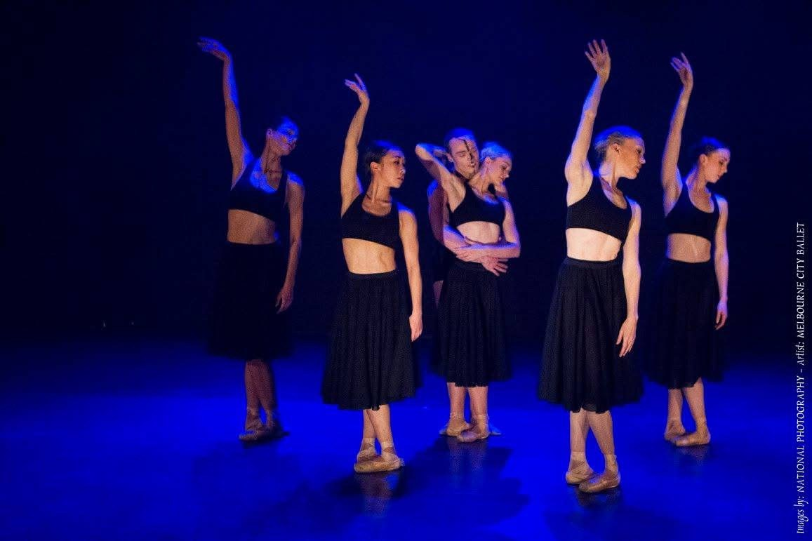
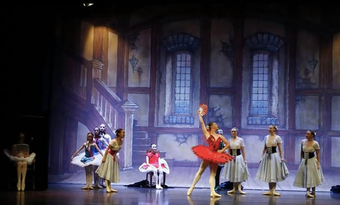

Creative
Work
She founded a performance collective for amateur adult contemporary dancers, creating a space for people to experience the joy, discipline and connection of making performance work together. Through this collective, she returned to choreographing and producing shows, works and film, rediscovering a part of her creative practice that she intends to return to more fully when her children are older.

Dance
on Film
2 min 21 sec
On
Stage



Movement
Outdoors


Creative
Practice
As a mother, Alexandra is currently allowing her creative practice to move at a different rhythm. With her second child growing inside her, her focus is presently shared between parenting, teaching and developing the foundations of her next chapter. Larger creative projects are temporarily on hold, but the movement work itself continues to evolve.
About Alexandra